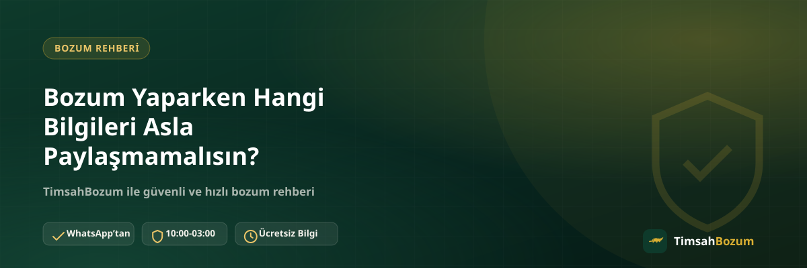

Bozum işlemi aslında çok az bilgiyle yürüyen basit bir süreç: kod ya da bakiye bilgisi, sonra da oran teyidi. Ama bu basitliğin arkasına saklanıp senden fazladan bilgi istemeye çalışan kişilerle karşılaşman da mümkün. Bu yazıda bozum yaparken asla paylaşmaman gereken bilgileri ve neden bu bilgilerin istenmeyeceğini anlatıyoruz.
Bozum İşleminde Hangi Bilgi Gerekli, Hangisi Değil?
Bir bozum işlemi için ihtiyaç duyulan bilgi aslında oldukça sınırlı. Kod tabanlı bir hizmet bozduruyorsan tek gereken şey kodun kendisi; bakiye tabanlı bir hizmet bozduruyorsan güncel bakiyeni gösteren okunaklı bir ekran görüntüsü yeterli. Bunun dışında istenen her ek bilgi, sürecin normal işleyişinin parçası değildir ve dikkatle değerlendirilmelidir.
SMS Doğrulama Kodunu Neden Asla Paylaşmamalısın?
Bozum sürecinin hiçbir aşaması, telefonuna gelen bir SMS doğrulama kodunu senden istemez. Bu kod genelde bir hesaba giriş yapmak ya da bir işlemi onaylamak için üretilir ve paylaşıldığı anda o hesaba veya işleme erişim vermiş olursun. Bozum bilgin (kod veya bakiye ekran görüntüsü) ile SMS doğrulama kodunun hiçbir ilgisi yoktur; biri işlemi başlatan bilgi, diğeri bambaşka bir sistemin güvenlik katmanıdır. Böyle bir talep gelirse işlemi hemen durdur.
Hesap Şifreni İstenirse Ne Yapmalısın?
Hiçbir bozum işlemi, hesap şifresi, e-posta şifresi veya uygulama giriş bilgisi gerektirmez. Kod veya bakiye bilgisini paylaşman, hesabına giriş yetkisi vermenle aynı şey değildir. Şifre isteyen bir talep karşına çıkarsa bu, resmi süreçle ilgisi olmayan bir davranıştır; bilgini paylaşmadan önce mutlaka resmi WhatsApp hattından teyit almalısın.
Kimlik Belgesi veya Üyelik Bilgisi Gerekir mi?
Bozum işlemi için üyelik oluşturmak, form doldurmak ya da kimlik belgesi (nüfus cüzdanı, ehliyet fotoğrafı vb.) yüklemek gerekmez. Bu tür bir talep, standart bozum sürecinin dışında bir şeydir ve genelde farklı bir amaca hizmet eder. Kimlik bilgisi istenen bir durumla karşılaşırsan işlemi sürdürmeden önce durumu sorgulamalısın.
Banka Kartı Bilgilerini Paylaşmak Güvenli mi?
Bozum işleminde ödeme, kod veya bakiye teyit edildikten sonra WhatsApp üzerinden görüşülen bir yöntemle yapılır. Kart numarası, son kullanma tarihi veya CVV gibi kart güvenlik bilgilerini bir bozum işlemi kapsamında paylaşmak gerekmez; bu bilgiler ödemeyi almak için değil, ödeme yapmak için kullanılan bilgilerdir ve bozum sürecinin işleyişiyle örtüşmez.
Sahte Hesaplar Hangi Bilgileri Almaya Çalışır?
Resmi hattı taklit eden sahte hesaplar genelde yukarıda sayılan bilgilerin bir veya birkaçını aynı anda istemeye çalışır: SMS kodu, şifre, kart bilgisi veya kimlik belgesi. Amaç genelde seni aceleye getirip düşünmeden bilgi paylaşmanı sağlamaktır. Karşındaki hattın resmi olup olmadığından emin değilsen, bilgi paylaşmadan önce numarayı doğrulamalısın.
Paylaşman Gereken Tek Bilgi Nedir?
Özetle, bir bozum işlemini başlatmak için paylaşman gereken tek şey bozdurmak istediğin kodun kendisi ya da bakiyeni gösteren güncel bir ekran görüntüsüdür. Bunun ötesinde istenen her bilgi, sürecin doğal bir parçası değildir. Bu basit kuralı aklında tutmak, hem işlemini hızlandırır hem de seni gereksiz risklerden korur.
Neden Bu Kadar Az Bilgi Yeterli?
Bozum işlemi, senin bir hesap açmanı veya kişisel verilerini bir sisteme kaydetmeni gerektirmez; tek tek işlemler üzerinden yürüyen, anlık bir süreçtir. Örneğin Paycell bozdurma ya da mobil ödeme bozdurma yaparken de aynı mantık geçerli: bakiyeni gösteren bir ekran görüntüsü ve oran teyidi, işlemi tamamlamak için yeterli. Fazladan bilgi istenmesi, işlemi hızlandırmaz; tam tersine güvenlik açısından bir uyarı işaretidir.
Şüpheli Bir Taleple Karşılaşırsan Ne Yapmalısın?
Yukarıda sayılan bilgilerden herhangi biri senden istenirse önce işlemi durdur, sonra resmi WhatsApp hattımızdan (+90 543 887 21 71) durumu teyit et. Konuştuğun hattın resmi numarayla aynı olup olmadığını kontrol etmek, bilgi paylaşmadan önce atman gereken en basit ve en etkili adım. Emin olmadığın bir talebe bilgi paylaşmaktansa, bir dakika ayırıp teyit etmek çok daha güvenli.
Bu Kural Tüm Hizmetler İçin Aynı mı?
Evet, paylaşman gereken bilginin sınırlı olması kuralı hizmet türüne göre değişmez; sadece paylaşman gereken bilginin niteliği değişir. Razer Gold ve iTunes gibi kod tabanlı hizmetlerde tek gereken şey kullanılmamış kodun kendisidir, kodun tam değeri tek seferde bozdurulur. Pokus, Paycell, Vodafone, Türk Telekom ve Turkcell mobil ödeme gibi bakiye tabanlı hizmetlerde ise güncel bakiyeni gösteren bir ekran görüntüsü yeterli, bakiyenin tamamını ya da bir kısmını bozdurmayı seçebilirsin. Hangi hizmeti kullanırsan kullan, SMS kodu, şifre, kimlik belgesi veya kart güvenlik bilgisi hiçbirinde istenmez.
Ekran Görüntüsü Paylaşırken Ekstra Dikkat Etmen Gerekenler
Bakiye veya işlem geçmişini gösteren bir ekran görüntüsü paylaşırken, sadece bozum işlemiyle ilgili kısmı görünür tutman yeterli. Ekran görüntüsünde uygulamanın başka bölümlerine ait, işlemle ilgisi olmayan kişisel bilgiler (örneğin farklı hesap bakiyeleri veya iletişim listesi) varsa bunları paylaşmadan önce kırpman gerekmez, ama karşındaki hattın senden bu tür ek bilgi istemesi de normal değildir. Paylaştığın görüntünün yalnızca talep edilen bilgiyi (kod ya da bakiye) net şekilde göstermesi, hem senin hem de işlemi yürüten hattın işini kolaylaştırır.
Bilgini yalnızca güvendiğin ve doğruladığın bir hatta paylaşmak istiyorsan, resmi WhatsApp hattımıza yazarak işlemini güvenle başlatabilirsin.
İlgili Yazılar
- Bozum Yaparken SMS Doğrulama Kodu İsteyen Kişilere Dikkat
- Bozum İşleminde Hesabıma Erişim Veriyor muyum?
- Resmi Bozum Hattını Sahte Hesaplardan Nasıl Ayırt Edersin?